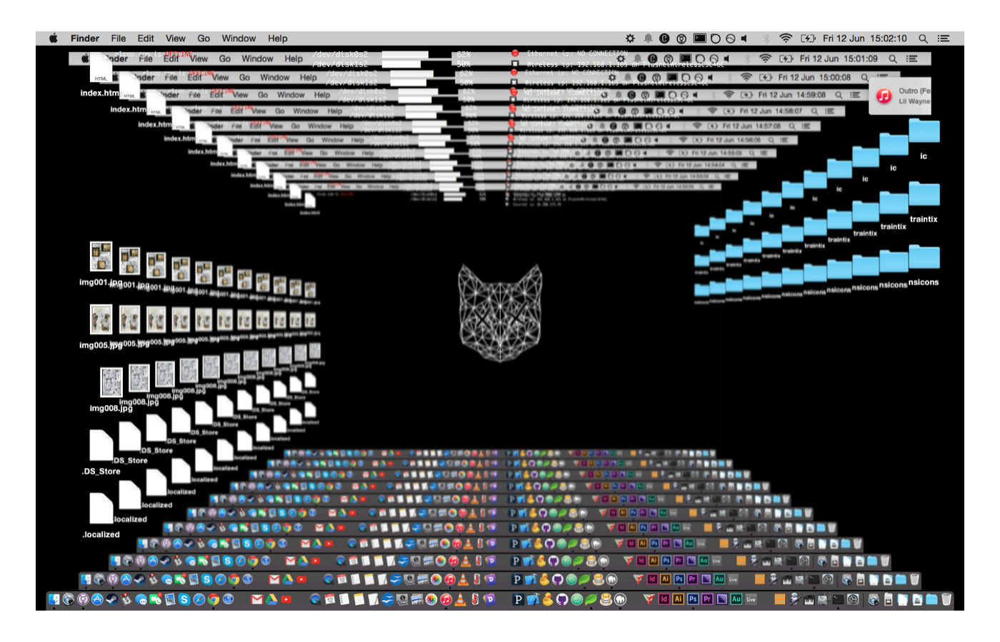

<h1>DesktopScript</h1>
<h3>An automator script to screenshot desktop and set it as background.</h3>

<a href="https://github.com/isaac-art/desktopscript/zipball/master">download .zip</a>
<a href="https://github.com/isaac-art/desktopscript/tarball/master">download .tar.gz</a>
<a href="https://github.com/isaac-art/desktopscript">view on GitHub</a>



